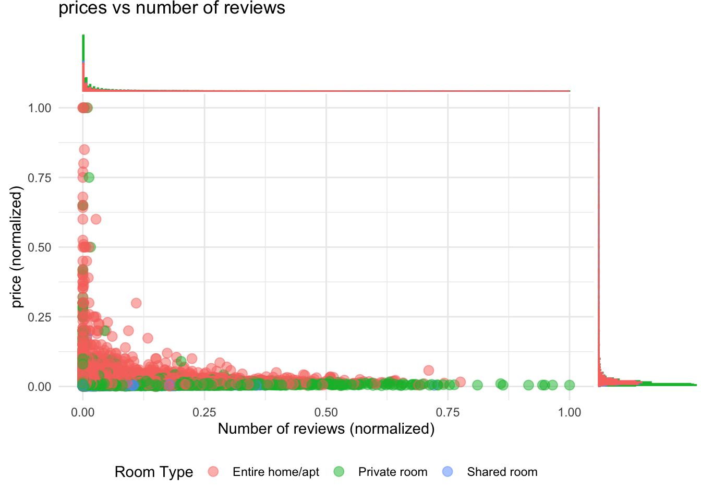
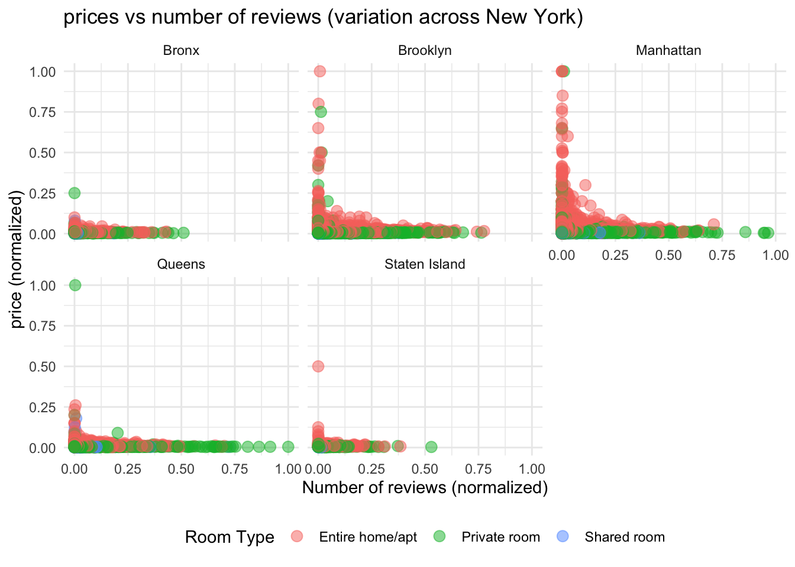
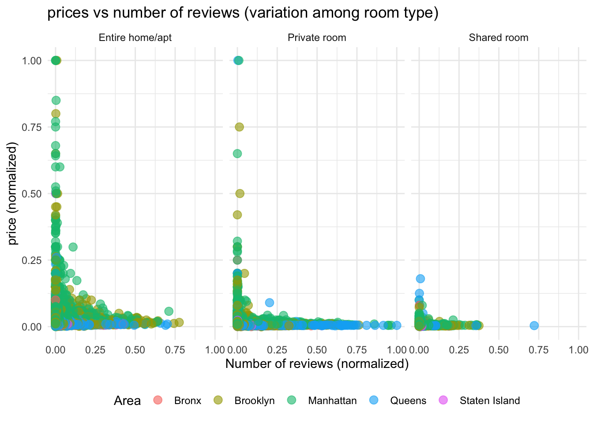
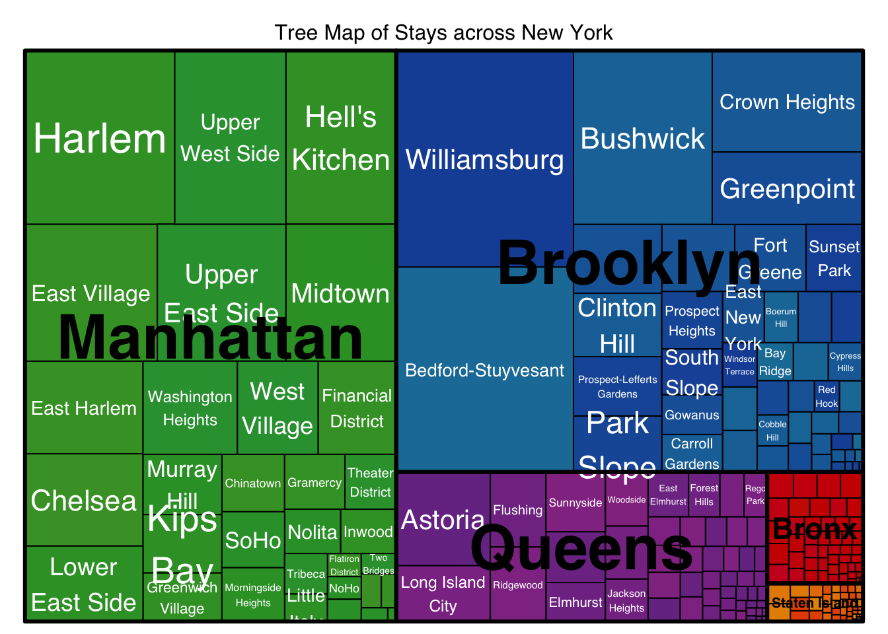

Code
library(tidyverse)
library(ggplot2)
library(ggExtra)
library(treemap)
knitr::opts_chunk$set(echo = TRUE, warning=FALSE, message=FALSE)Srujan Kagitala
June 30, 2023
Today’s challenge is to:
R Graph Gallery is a good starting point for thinking about what information is conveyed in standard graph types, and includes example R code. And anyone not familiar with Edward Tufte should check out his fantastic books and courses on data visualizaton.
(be sure to only include the category tags for the data you use!)
Read in one (or more) of the following datasets, using the correct R package and command.
Used the same dataset as in challenge 5. Building on top of it.
# A tibble: 6 × 16
id name host_id host_name neighbourhood_group neighbourhood latitude
<dbl> <chr> <dbl> <chr> <chr> <chr> <dbl>
1 2539 Clean & qu… 2787 John Brooklyn Kensington 40.6
2 2595 Skylit Mid… 2845 Jennifer Manhattan Midtown 40.8
3 3647 THE VILLAG… 4632 Elisabeth Manhattan Harlem 40.8
4 3831 Cozy Entir… 4869 LisaRoxa… Brooklyn Clinton Hill 40.7
5 5022 Entire Apt… 7192 Laura Manhattan East Harlem 40.8
6 5099 Large Cozy… 7322 Chris Manhattan Murray Hill 40.7
# ℹ 9 more variables: longitude <dbl>, room_type <chr>, price <dbl>,
# minimum_nights <dbl>, number_of_reviews <dbl>, last_review <date>,
# reviews_per_month <dbl>, calculated_host_listings_count <dbl>,
# availability_365 <dbl>The AB_NYC_2019 provides information on Airbnb stays in New York in 2019. There are details about 48895 stays. They are distributed across Bronx, Brooklyn, Manhattan, Queens, Staten Island neighbourhoods. The below table shows the number of stay options across New York neighbourhood.
# A tibble: 15 × 3
# Groups: neighbourhood_group [5]
neighbourhood_group room_type count
<chr> <chr> <int>
1 Bronx Entire home/apt 379
2 Bronx Private room 652
3 Bronx Shared room 60
4 Brooklyn Entire home/apt 9559
5 Brooklyn Private room 10132
6 Brooklyn Shared room 413
7 Manhattan Entire home/apt 13199
8 Manhattan Private room 7982
9 Manhattan Shared room 480
10 Queens Entire home/apt 2096
11 Queens Private room 3372
12 Queens Shared room 198
13 Staten Island Entire home/apt 176
14 Staten Island Private room 188
15 Staten Island Shared room 9Each stay option has information about id, name, host_id, host_name, neighbourhood_group, neighbourhood, latitude, longitude, room_type, price, minimum_nights, number_of_reviews, last_review, reviews_per_month, calculated_host_listings_count, availability_365.
Is your data already tidy, or is there work to be done? Be sure to anticipate your end result to provide a sanity check, and document your work here.
Variables like id and host_id are int but they are actually categorical. So, they have to be converted to factor. We can drop one of the columns out of “host_id” and “name” for exploratory analysis as they only act as primary keys. “last_review” column has to be converted to date format to represent the true data format. All character columns like neighbourhood_group, neighbourhood, etc have to be converted to factor to get better insights on using summary. After this step, summary will give value counts for categorical variables and there will be 15 columns.
id host_id host_name neighbourhood_group
2539 : 1 219517861: 327 Michael : 417 Bronx : 1091
2595 : 1 107434423: 232 David : 403 Brooklyn :20104
3647 : 1 30283594 : 121 Sonder (NYC): 327 Manhattan :21661
3831 : 1 137358866: 103 John : 294 Queens : 5666
5022 : 1 12243051 : 96 Alex : 279 Staten Island: 373
5099 : 1 16098958 : 96 (Other) :47154
(Other):48889 (Other) :47920 NA's : 21
neighbourhood latitude longitude
Williamsburg : 3920 Min. :40.50 Min. :-74.24
Bedford-Stuyvesant: 3714 1st Qu.:40.69 1st Qu.:-73.98
Harlem : 2658 Median :40.72 Median :-73.96
Bushwick : 2465 Mean :40.73 Mean :-73.95
Upper West Side : 1971 3rd Qu.:40.76 3rd Qu.:-73.94
Hell's Kitchen : 1958 Max. :40.91 Max. :-73.71
(Other) :32209
room_type price minimum_nights number_of_reviews
Entire home/apt:25409 Min. : 0.0 Min. : 1.00 Min. : 0.00
Private room :22326 1st Qu.: 69.0 1st Qu.: 1.00 1st Qu.: 1.00
Shared room : 1160 Median : 106.0 Median : 3.00 Median : 5.00
Mean : 152.7 Mean : 7.03 Mean : 23.27
3rd Qu.: 175.0 3rd Qu.: 5.00 3rd Qu.: 24.00
Max. :10000.0 Max. :1250.00 Max. :629.00
last_review reviews_per_month calculated_host_listings_count
Min. :2011-03-28 Min. : 0.010 Min. : 1.000
1st Qu.:2018-07-08 1st Qu.: 0.190 1st Qu.: 1.000
Median :2019-05-19 Median : 0.720 Median : 1.000
Mean :2018-10-04 Mean : 1.373 Mean : 7.144
3rd Qu.:2019-06-23 3rd Qu.: 2.020 3rd Qu.: 2.000
Max. :2019-07-08 Max. :58.500 Max. :327.000
NA's :10052 NA's :10052
availability_365
Min. : 0.0
1st Qu.: 0.0
Median : 45.0
Mean :112.8
3rd Qu.:227.0
Max. :365.0
Cleaned data has 15 columns. Summary shows value counts of categorical variables. The class of “last_review” is Date.
Are there any variables that require mutation to be usable in your analysis stream? For example, do you need to calculate new values in order to graph them? Can string values be represented numerically? Do you need to turn any variables into factors and reorder for ease of graphics and visualization?
“price” and “number_of_reviews” variables should be normalized to find the correlation between them. Also, drop na values for price and number_of_reviews columns. After this step, we will have 17 columns and less than or equal to 48895 rows.
Number of columns = 17 Number of rows = 48895
#Plot for prices vs number of reviews by room type
plot <- ggplot(stay_data,
mapping = aes(x = no_reviews_normal,
y = price_normal,
color=room_type)) +
geom_point(size = 3, alpha = 0.5) +
theme_minimal() +
labs(title = "prices vs number of reviews",
y = "price (normalized)",
x = "Number of reviews (normalized)",
color = "Room Type") +
theme(legend.position = "bottom")
#To plot marginal histograms along the axes
ggMarginal(p = plot, type = "histogram", bins=500, groupColour=TRUE, groupFill = TRUE)
#Plot for prices vs number of reviews across New York
ggplot(stay_data,
mapping = aes(x = no_reviews_normal,
y = price_normal,
color=room_type)) +
geom_point(size = 3, alpha = 0.5) +
theme_minimal() +
facet_wrap(~neighbourhood_group) +
labs(title = "prices vs number of reviews (variation across New York)",
y = "price (normalized)",
x = "Number of reviews (normalized)",
color = "Room Type") +
theme(legend.position = "bottom")
#Plot for prices vs number of reviews by room type
ggplot(stay_data,
mapping = aes(x = no_reviews_normal,
y = price_normal,
color = neighbourhood_group)) +
geom_point(size = 3, alpha = 0.6) +
theme_minimal() +
facet_wrap(~room_type) +
labs(title = "prices vs number of reviews (variation among room type)",
y = "price (normalized)",
x = "Number of reviews (normalized)",
color = "Area") +
theme(legend.position = "bottom")
From the above plots, we can observe that, reviews directly didn’t play a significant role in the prices. But stays with lesser reviews have higher standard deviation in prices. There is significant variation in prices of Entire home/apt and private room compared to shared room. If we look at area wise distibution, Brooklyn and Manhattan had higher standard deviation in prices compared to Bronx, Queens and Staten Island.
neighbourhood_distr <- stay_data %>%
group_by(neighbourhood_group, neighbourhood) %>%
summarise(count = n())
# plot another plot of neighbourhood as treemap.
treemap(neighbourhood_distr,
index = c("neighbourhood_group", "neighbourhood"),
vSize = "count",
type = "index",
fontsize.labels = c(35,50),
fontcolor.labels = c("black", "white"),
bg.labels=c("transparent"),
align.labels=list(
c("center", "center"),
c("center", "centre")),
overlap.labels=0.5,
inflate.labels=F,
palette = "Set1",
title="Tree Map of Stays across New York",
fontsize.title=12)
---
title: "Challenge 7 - Air BNB"
author: "Srujan Kagitala"
description: "Visualizing Multiple Dimensions"
date: "6/30/2023"
format:
html:
toc: true
code-fold: true
code-copy: true
code-tools: true
categories:
- challenge_7
- air_bnb
- srujan_kagitala
---
```{r}
#| label: setup
#| warning: false
#| message: false
library(tidyverse)
library(ggplot2)
library(ggExtra)
library(treemap)
knitr::opts_chunk$set(echo = TRUE, warning=FALSE, message=FALSE)
```
## Challenge Overview
Today's challenge is to:
1) read in a data set, and describe the data set using both words and any supporting information (e.g., tables, etc)
2) tidy data (as needed, including sanity checks)
3) mutate variables as needed (including sanity checks)
4) Recreate at least two graphs from previous exercises, but introduce at least one additional dimension that you omitted before using ggplot functionality (color, shape, line, facet, etc) The goal is not to create unneeded [chart ink (Tufte)](https://www.edwardtufte.com/tufte/), but to concisely capture variation in additional dimensions that were collapsed in your earlier 2 or 3 dimensional graphs.
- Explain why you choose the specific graph type
5) If you haven't tried in previous weeks, work this week to make your graphs "publication" ready with titles, captions, and pretty axis labels and other viewer-friendly features
[R Graph Gallery](https://r-graph-gallery.com/) is a good starting point for thinking about what information is conveyed in standard graph types, and includes example R code. And anyone not familiar with Edward Tufte should check out his [fantastic books](https://www.edwardtufte.com/tufte/books_vdqi) and [courses on data visualizaton.](https://www.edwardtufte.com/tufte/courses)
(be sure to only include the category tags for the data you use!)
## Read in data
Read in one (or more) of the following datasets, using the correct R package and command.
- air_bnb ⭐⭐⭐
Used the same dataset as in challenge 5. Building on top of it.
```{r}
#| label: read
stay_data <- read_csv("_data/AB_NYC_2019.csv")
head(stay_data)
```
### Briefly describe the data
```{r}
#| label: describe_1
area_wise_stays <- stay_data %>%
group_by(neighbourhood_group, room_type) %>%
summarise(count = n())
```
The AB_NYC_2019 provides information on Airbnb stays in New York in 2019. There are details about `r nrow(stay_data)` stays. They are distributed across `r unique(area_wise_stays$neighbourhood_group)` neighbourhoods. The below table shows the number of stay options across New York neighbourhood.
```{r}
#| label: describe_2
area_wise_stays
```
Each stay option has information about `r names(stay_data)`.
## Tidy Data (as needed)
Is your data already tidy, or is there work to be done? Be sure to anticipate your end result to provide a sanity check, and document your work here.
Variables like id and host_id are int but they are actually categorical. So, they have to be converted to factor. We can drop one of the columns out of "host_id" and "name" for exploratory analysis as they only act as primary keys. "last_review" column has to be converted to date format to represent the true data format. All character columns like neighbourhood_group, neighbourhood, etc have to be converted to factor to get better insights on using summary. After this step, summary will give value counts for categorical variables and there will be `r ncol(stay_data)-1` columns.
```{r}
#| label: clean_1
stay_data <- stay_data %>%
select(-name) %>%
mutate_if(is.character, as.factor) %>%
mutate(id = as.factor(id),
host_id = as.factor(host_id),
last_review = as.Date(last_review, format = "%Y-%m-%d"))
summary(stay_data)
```
Cleaned data has `r ncol(stay_data)` columns. Summary shows value counts of categorical variables. The class of "last_review" is `r class(stay_data$last_review)`.
Are there any variables that require mutation to be usable in your analysis stream? For example, do you need to calculate new values in order to graph them? Can string values be represented numerically? Do you need to turn any variables into factors and reorder for ease of graphics and visualization?
"price" and "number_of_reviews" variables should be normalized to find the correlation between them. Also, drop na values for price and number_of_reviews columns. After this step, we will have `r ncol(stay_data)+2` columns and less than or equal to `r nrow(stay_data)` rows.
```{r}
#| label: clean_2
stay_data <- stay_data %>%
drop_na(price, number_of_reviews) %>%
mutate(price_normal = (price - min(price))/(max(price) - min(price)),
no_reviews_normal =(number_of_reviews - min(number_of_reviews))/(max(number_of_reviews) - min(number_of_reviews)))
```
Number of columns = `r ncol(stay_data)`
Number of rows = `r nrow(stay_data)`
## Visualization with Multiple Dimensions
```{r}
#| label: plot_1
#Plot for prices vs number of reviews by room type
plot <- ggplot(stay_data,
mapping = aes(x = no_reviews_normal,
y = price_normal,
color=room_type)) +
geom_point(size = 3, alpha = 0.5) +
theme_minimal() +
labs(title = "prices vs number of reviews",
y = "price (normalized)",
x = "Number of reviews (normalized)",
color = "Room Type") +
theme(legend.position = "bottom")
#To plot marginal histograms along the axes
ggMarginal(p = plot, type = "histogram", bins=500, groupColour=TRUE, groupFill = TRUE)
#Plot for prices vs number of reviews across New York
ggplot(stay_data,
mapping = aes(x = no_reviews_normal,
y = price_normal,
color=room_type)) +
geom_point(size = 3, alpha = 0.5) +
theme_minimal() +
facet_wrap(~neighbourhood_group) +
labs(title = "prices vs number of reviews (variation across New York)",
y = "price (normalized)",
x = "Number of reviews (normalized)",
color = "Room Type") +
theme(legend.position = "bottom")
#Plot for prices vs number of reviews by room type
ggplot(stay_data,
mapping = aes(x = no_reviews_normal,
y = price_normal,
color = neighbourhood_group)) +
geom_point(size = 3, alpha = 0.6) +
theme_minimal() +
facet_wrap(~room_type) +
labs(title = "prices vs number of reviews (variation among room type)",
y = "price (normalized)",
x = "Number of reviews (normalized)",
color = "Area") +
theme(legend.position = "bottom")
```
From the above plots, we can observe that, reviews directly didn't play a significant role in the prices. But stays with lesser reviews have higher standard deviation in prices. There is significant variation in prices of Entire home/apt and private room compared to shared room. If we look at area wise distibution, Brooklyn and Manhattan had higher standard deviation in prices compared to Bronx, Queens and Staten Island.
```{r}
#| label: plot_2
neighbourhood_distr <- stay_data %>%
group_by(neighbourhood_group, neighbourhood) %>%
summarise(count = n())
# plot another plot of neighbourhood as treemap.
treemap(neighbourhood_distr,
index = c("neighbourhood_group", "neighbourhood"),
vSize = "count",
type = "index",
fontsize.labels = c(35,50),
fontcolor.labels = c("black", "white"),
bg.labels=c("transparent"),
align.labels=list(
c("center", "center"),
c("center", "centre")),
overlap.labels=0.5,
inflate.labels=F,
palette = "Set1",
title="Tree Map of Stays across New York",
fontsize.title=12)
```